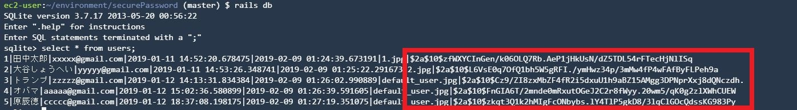

パスワード暗号化
制作イメージ
パスワードを暗号化してください。
パスワード暗号化

【カラム追加及び削除】
◆usersテーブルに下記カラムの追加及び削除をしてください。
・マイグレーションファイル名：change_users_columns
・追加カラム名：password_digest
・データ型：string
・削除カラム名：password
【パスワード暗号化】
・bcryptというgemをインストールしてください。また、インストール時はbandlerを使用するようにしてください。
・has_secure_passwordメソッドをUserモデルに追加してください。
・authenticateメソッドを使用して、ログイン時の認証処理を下記の通り修正してください。
1. フォームに入力されたメールアドレスに一致するユーザーを取得する
2. フォームに入力された暗号化パスワードと、usersテーブルから取得したユーザーの暗号化パスワードが一致するか判定する